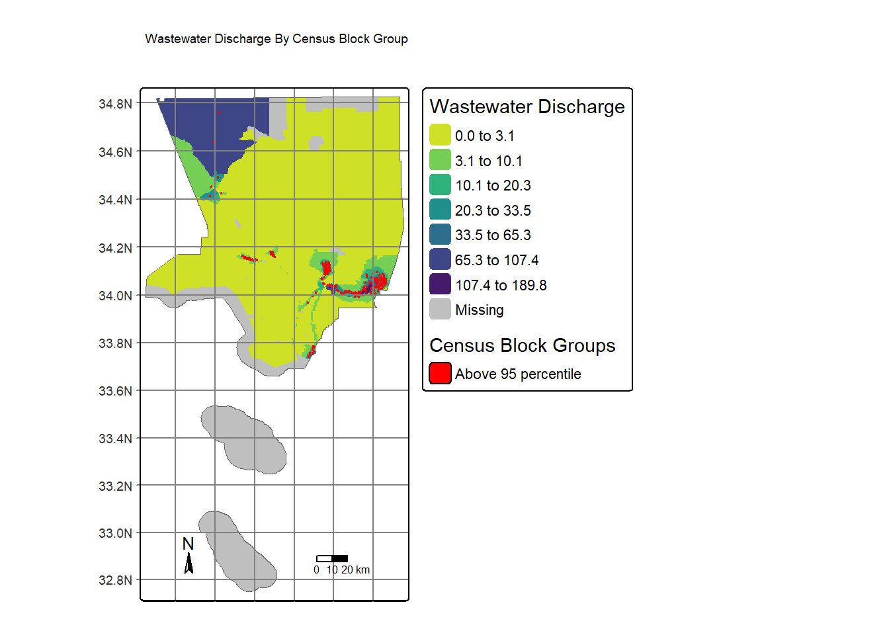
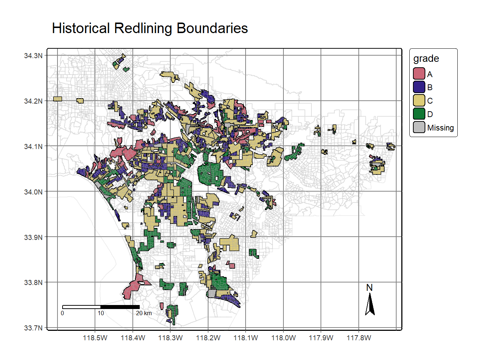
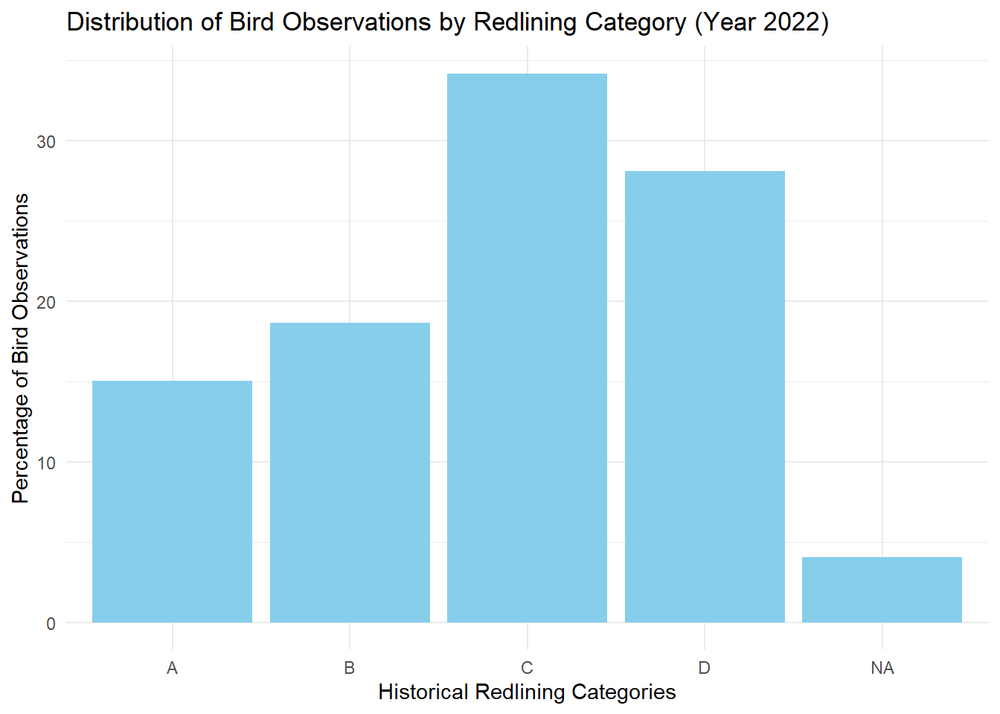

Present-day environmental justice may reflect legacies of injustice in the past. The United States has a long history of racial segregation which is still visible. During the 1930’s the Home Owners’ Loan Corporation (HOLC), as part of the New Deal, rated neighborhoods based on their perceived safety for real estate investment. Their ranking system, (A (green), B (blue), C (yellow), D (red)) was then used to block access to loans for home ownership. Colloquially known as “redlining”, this practice has had widely-documented consequences not only for community wealth, but also health.1 Redlined neighborhoods have less greenery2 and are hotter than other neighborhoods.3
Check out coverage by the New York Times.
A recent study found that redlining has not only affected the environments communities are exposed to, it has also shaped our observations of biodiversity.4 Community or citizen science, whereby individuals share observations of species, is generating an enormous volume of data. Ellis-Soto and co-authors found that redlined neighborhoods remain the most undersampled areas across 195 US cities. This gap is highly concerning, because conservation decisions are made based on these data.
Check out coverage by EOS.
We will be working with data from the United States Environmental Protection Agency’s EJScreen: Environmental Justice Screening and Mapping Tool.
According to the US EPA website:
This screening tool and data may be of interest to community residents or other stakeholders as they search for environmental or demographic information. It can also support a wide range of research and policy goals. The public has used EJScreen in many different locations and in many different ways.
EPA is sharing EJScreen with the public:
- to be more transparent about how we consider environmental justice in our work,
- to assist our stakeholders in making informed decisions about pursuing environmental justice and,
- to create a common starting point between the agency and the public when looking at issues related to environmental justice.
EJScreen provides on environmental and demographic information for the US at the Census tract and block group levels. You will be working with block group data that has been downloaded from the EPA site. To understand the associated data columns, you will need to explore the Technical Documentation and column description spreadsheet available in the data folder. I also encourage you to explore the limitations and caveats of the data.
A team of researchers, led by the Digital Scholarship Lab at the University of Richmond have digitized maps and information from the HOLC as part of the Mapping Inequality project.
We will be working with maps of HOLC grade designations for Los Angeles. Information on the data can be found here.5
The Global Biodiversity Information Facility is the largest aggregator of biodiversity observations in the world. Observations typically include a location and date that a species was observed.
We will be working observations of birds from 2021 onward.
# Read in necessary packages
library(tidyverse)
library(sf)
library(tmap)Read in EJScreen data and filter to Los Angeles County
ejscreen <- st_read("data/EJSCREEN_2023_BG_StatePct_with_AS_CNMI_GU_VI.gdb") ## Reading layer `EJSCREEN_StatePctiles_with_AS_CNMI_GU_VI' from data source
## `C:\Users\17143\Documents\MEDS\MEDS_223\Projects\HOLC_Grade_Inequality\data\EJSCREEN_2023_BG_StatePct_with_AS_CNMI_GU_VI.gdb'
## using driver `OpenFileGDB'
## Simple feature collection with 243021 features and 223 fields
## Geometry type: MULTIPOLYGON
## Dimension: XY
## Bounding box: xmin: -19951910 ymin: -1617130 xmax: 16259830 ymax: 11554350
## Projected CRS: WGS 84 / Pseudo-Mercatorcalifornia <- ejscreen %>%
filter(ST_ABBREV == "CA")
# filter to a county you are interested in
la_county <- california %>%
filter(CNTY_NAME %in% c("Los Angeles County"))Let’s create a map of wastewater discharge by census block groups. Indicate which census block groups are above the 95th percentile of national values for wastewater discharge by adding a centroid.
# Filtering for centroids above the 95th percentile
la_centroid <- st_centroid(la_county) %>%
filter(P_PWDIS > 95)
# Map 1: Base map with filled census block groups representing wastewater discharge
map1 <- tm_shape(la_county) + # Create a base map using LA County geometry
tm_borders() + # Add borders to the map
tm_fill("PWDIS", # Fill census block groups based on "PWDIS" variable
style = "jenks", # Jenks classification
n = 7, palette = "viridis", # 7 breaks, viridis palette
title = "Wastewater Discharge") + # Add a legend title for the fill
tm_legend(outside = TRUE) # Place the legend outside the map
# Map 2: Build upon Map 1, adding red dots at the centroids of census block groups
map2 <- map1 +
tm_shape(la_centroid) + # Add a new layer with centroids of census block groups
tm_dots(size = 0.10, aes(color = "red"), # Display dots at centroids, red in color
fill_alpha = 1) + # Make the dots fully opaque
tm_add_legend(type = "fill", # Add a legend indicating red dots
title = "Census Block Groups", # Legend title
labels = c("Above 95 percentile"), # Legend labels
fill = "red") + # Color for the legend
tm_layout(main.title = "Wastewater Discharge By Census Block Group", # Set main title
xlab.text = "Longitude", # X-axis label
ylab.text = "latitude") + # Y-axis label
tm_graticules() + # Add graticules (latitude and longitude lines)
tm_scale_bar() + # Add a scale bar
tm_compass(position = c("left", "bottom"), # Add a compass in the bottom-left corner
size = 1) # Set the compass size
# Print Map 2
map2
This map is of LA County and it shows the percentiles of wastewater discharge. The least amount of discharge is represented by green and the most discharge is represented by dark purple. The red areas are cencus block groups over the 95th percentile.
Next, we’ll find the percent of census block groups that have:
- less than 5% of the population is considered low income
# filtering for low income percent that is less than 5 percent
la_centroid1 <- st_centroid(la_county) %>%
filter(LOWINCPCT < .05)
# divide the number of rows in la_centroid1 by rows in la_county
nrow(la_centroid1) / nrow(la_county)## [1] 0.06114398# 6%In this analysis, we observe a proportion of approximately 6%. One inference drawn from this figure suggests a notable presence of census blocks with a greater share of residents classified as having a low income. This implies that there may be a higher concentration of individuals with lower income levels residing in Los Angeles County. Further exploration of the data is warranted to determine if this low-income population is more prevalent in areas assigned lower HOLC ranks.
Having examined the percentage of low-income residents across various census block groups, we will now investigate the association between census block groups and their proximity to Particulate Matter and Superfund sites.
We will find the percent of census block groups that are:
- above the 80th percentile for Particulate Matter 2.5 AND
- above the 80th percentile for Superfund proximity
# filtering above the 80 percentile
la_centroid2 <- st_centroid(la_county) %>%
filter(P_PM25 > 80 & P_PNPL > 80)
nrow(la_centroid2) / nrow(la_county)## [1] 0.17357# 17%Based on this analysis, it can be inferred that approximately 17% of census block groups reside in regions that fall within the 80th percentile concerning elevated PM 2.5 levels and proximity to Superfund sites.
Read in the redlining data for Los Angeles county from a URL link.
# Reading in redlining data
LA_redlining <- st_read("https://dsl.richmond.edu/panorama/redlining/static/citiesData/CALosAngeles1939/geojson.json") %>%
st_make_valid()## Reading layer `geojson' from data source
## `https://dsl.richmond.edu/panorama/redlining/static/citiesData/CALosAngeles1939/geojson.json'
## using driver `GeoJSON'
## Simple feature collection with 417 features and 14 fields
## Geometry type: MULTIPOLYGON
## Dimension: XY
## Bounding box: xmin: -118.6104 ymin: 33.70563 xmax: -117.7028 ymax: 34.30388
## Geodetic CRS: WGS 84Let’s make a map of historical redlining boundaries, colored by HOLC grade.
# Map layer 1: Historical Redlining Boundaries
tm_shape(LA_redlining) + # Define the base layer using the LA_redlining dataset
tm_graticules() + # Add graticules (latitude and longitude lines)
tm_polygons(fill = "grade", col = "black") + # Add polygons filled based on the "grade" variable, outlined in black
tm_shape(la_county) + # Add a new layer with LA County boundaries
tm_borders(col = "darkgrey", col_alpha = 0.2) + # Add county borders in dark grey with 20% transparency
tm_title("Historical Redlining Boundaries") + # Set the main title for the map
tm_scalebar(position = c("left", "bottom")) + # Add a scale bar in the bottom-left corner
tm_compass(position = c("right", "bottom")) # Add a compass in the bottom-right corner
This figure shows us where each HOLC grade is throughout LA County.
Let’s now find the number of census block groups that fall within areas with HOLC grades
st_crs(LA_redlining) <- st_crs(la_county)
st_crs(la_county) == st_crs(LA_redlining)
la_join <- st_join(la_county, LA_redlining)
nrow(la_join)This tells us that there are a total of 6591 census block groups that fall within HOLC grade areas.
Let’s summarize the current conditions based on EJScreen data within
historical redlining categories using the mean of the following
variables:
- % low income.
- percentile for particulate Matter 2.5.
- percentile for low life expectancy.
- percentile for air toxics cancer risk (20 points)
mean(ejscreen$LOWINCPCT, na.rm = TRUE) * 100## [1] 30.68652mean(ejscreen$P_PM25, na.rm = TRUE)## [1] 49.53076mean(ejscreen$LIFEEXPPCT, na.rm = TRUE) * 100## [1] 19.51073mean(ejscreen$P_CANCER, na.rm = TRUE)## [1] 24.17383The mean percent of low income is 30%, the mean percentile for particulate matter 2.5 is 50%, the mean percentile for low life expectancy is 19%, and the mean percentile for air toxic cancer risk is 24%. Based on this analysis, individuals residing in areas assigned an A HOLC grade experience a higher standard of living compared to those in areas with a D HOLC grade. The A HOLC grade is associated with a larger income pool, implying greater access to quality healthcare and a cleaner living environment, in contrast to areas with lower income grades.
For bird observations from 2022 that fall within neighborhoods with HOLC grads, let’s find the percent of observations within each redlining categories and plot results.
# Read in the birds data
gbif_birds <- st_read("data/gbif-birds-LA") ## Reading layer `gbif-birds-LA' from data source
## `C:\Users\17143\Documents\MEDS\MEDS_223\Projects\HOLC_Grade_Inequality\data\gbif-birds-LA'
## using driver `ESRI Shapefile'
## Simple feature collection with 1288865 features and 1 field
## Geometry type: POINT
## Dimension: XY
## Bounding box: xmin: -118.6099 ymin: 33.70563 xmax: -117.7028 ymax: 34.30385
## Geodetic CRS: WGS 84# Set the CRS of gbif_birds to match LA_redlining
st_crs(gbif_birds) <- st_crs(LA_redlining)
# Spatial join based on intersection between LA_redlining and gbif_birds
joined_birds <- st_join(LA_redlining, gbif_birds, join = st_intersects)
# Filter for only bird records from the year 2022
birds <- joined_birds[joined_birds$year == 2022, ]
# Count the number of bird records
nrow(birds)## [1] 7135# Calculate the percentage of bird records for each HOLC grade
birds_sum <- birds %>%
group_by(grade) %>% # Group data by HOLC grade
summarise(birds_p = n()/nrow(birds)*100) %>% # Calculate the percentage of bird records for each grade
st_drop_geometry() # Drop the spatial geometry for summary purposes
birds_sum## # A tibble: 5 × 2
## grade birds_p
## * <chr> <dbl>
## 1 A 15.0
## 2 B 18.6
## 3 C 34.2
## 4 D 28.1
## 5 <NA> 4.06# Create a bar plot using birds_sum data
ggplot(data = birds_sum, aes(x = grade, y = birds_p)) +
geom_bar(stat = "identity", fill = "skyblue") +
labs(
x = "Historical Redlining Categories", # X-axis label
y = "Percentage of Bird Observations", # Y-axis label
title = "Distribution of Bird Observations by Redlining Category (Year 2022)"
) + # title
theme_minimal() # Set the theme to minimal
Based on the results, it seems that there was a higher percentage of bird observations in areas with lower HOLC grades, specifically, the C category. It is surprising that there would be more birds in areas with lower HOLC grades but there could be a few explanations on why this is the case. Areas with lower HOLC grades may have retained more natural habitats, such as parks, open spaces, and undeveloped land. There could also be more food sources and ecological diversity. Another reason is that there could be some sampling bias where there could be more birdwatchers and researchers in lower HOLC grade areas which results in more observations in those areas, even if the bird populations are not actually higher.
Gee, G. C. (2008). A multilevel analysis of the relationship between institutional and individual racial discrimination and health status. American journal of public health, 98(Supplement_1), S48-S56.↩︎
Nardone, A., Rudolph, K. E., Morello-Frosch, R., & Casey, J. A. (2021). Redlines and greenspace: the relationship between historical redlining and 2010 greenspace across the United States. Environmental health perspectives, 129(1), 017006.↩︎
Hoffman, J. S., Shandas, V., & Pendleton, N. (2020). The effects of historical housing policies on resident exposure to intra-urban heat: a study of 108 US urban areas. Climate, 8(1), 12.↩︎
Ellis-Soto, D., Chapman, M., & Locke, D. H. (2023). Historical redlining is associated with increasing geographical disparities in bird biodiversity sampling in the United States. Nature Human Behaviour, 1-9.↩︎
Robert K. Nelson, LaDale Winling, Richard Marciano, Nathan Connolly, et al., “Mapping Inequality,” American Panorama, ed. Robert K. Nelson and Edward L. Ayers, accessed October 17, 2023, https://dsl.richmond.edu/panorama/redlining/↩︎